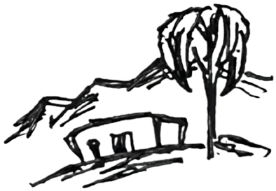
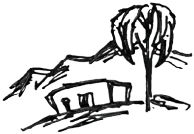

Casa Friedel
Das Ferienhaus "Casa Friedel" in Yaiza, Lanzarote lädt ein zu einem entspannten Urlaub in der kanarischen Sonne, ruhig gelegen am Rand des Ortskerns von Yaiza, freistehend mit schönem Blick auf die Feuerberge. Das “Casa Friedel” umfasst zwei Wohnungen: das Haupthaus und das Apartment. Diese können entweder jeweils einzeln, oder aber auch zusammen gebucht werden. Das Haus wird direkt vom Eigentümer vermietet.

Haupthaus

- Alte, schön renovierte Finca im typischen kanarischen Stil, ideal für 2-3 Personen
- Großer, lichtdurchfluteter Innenhof und kleiner Patio mit Blick auf die Feuerberge
- Große, vollständig eingerichtete Küche mit Spülmaschine sowie Kühl- und Gefrierschrank und angrenzendem Esszimmer
- Wohnzimmer mit WLAN & TV, großes Schlafzimmer mit Doppelbett und luxuriösem Bad, sowie ein separates Einzelzimmer


Nebenhaus

- Kleines Appartement ideal für 1-2 Personen, mit Doppelbett, Sofa, Duschbad, WLAN und TV
- Patio mit Außendusche und Blick auf die Feierberge
- Vollständig eingerichtete Küchenzeile mit Spülmaschine sowie Kühl- und Gefrierschrank


Preise


Veno
“Veno” ist der Künstlername des Eigentümers, Wilf Leitz. Dieser benannte das Casa Friedel nach seiner Frau Friedel, die es nach seinem Tod weiterführte. Als Friedel in ihren wohlverdienten Ruhestand ging, übernahmen ihre Kinder die Betreuung des Hauses. So wird es jetzt vor allem von Karin Lübbers betreut.
Nachfolgend sehen sie einige Impressionen Lanzarotes, eingefangen durch das fotografische Auge Venos.

 
